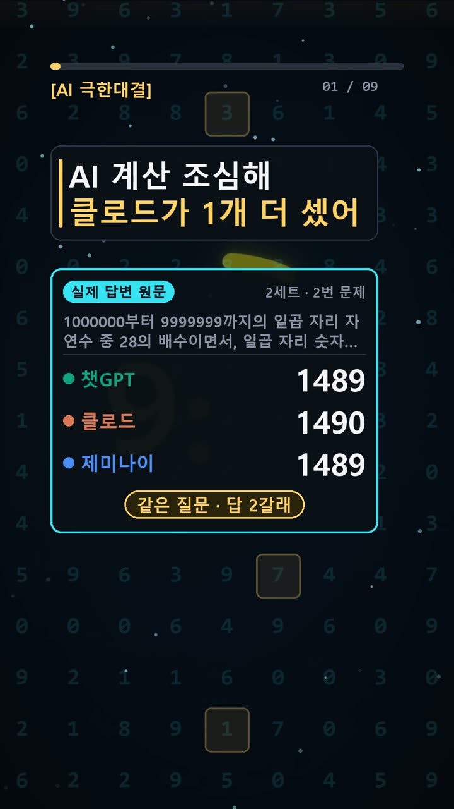
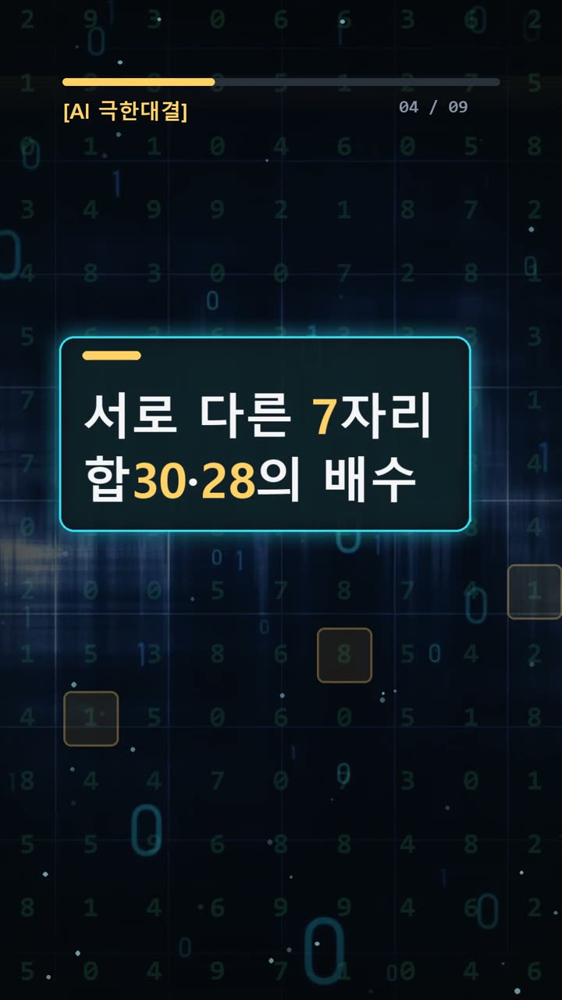
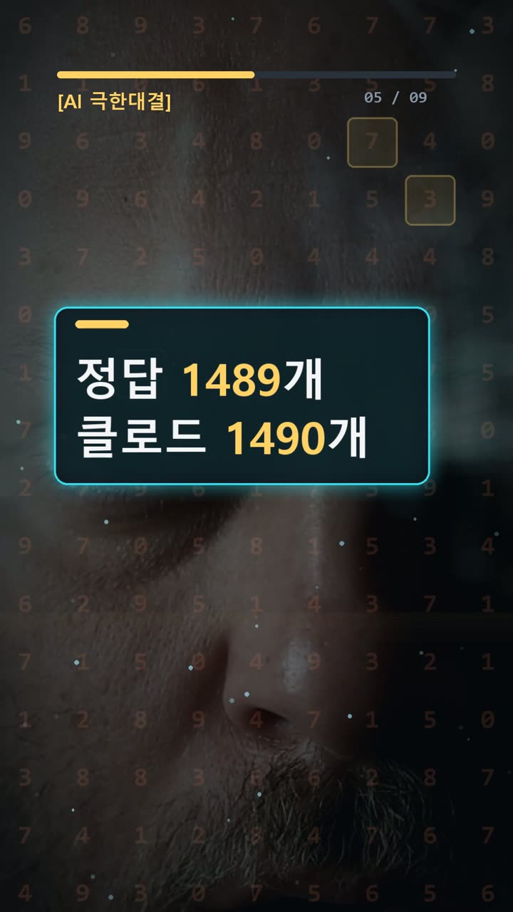
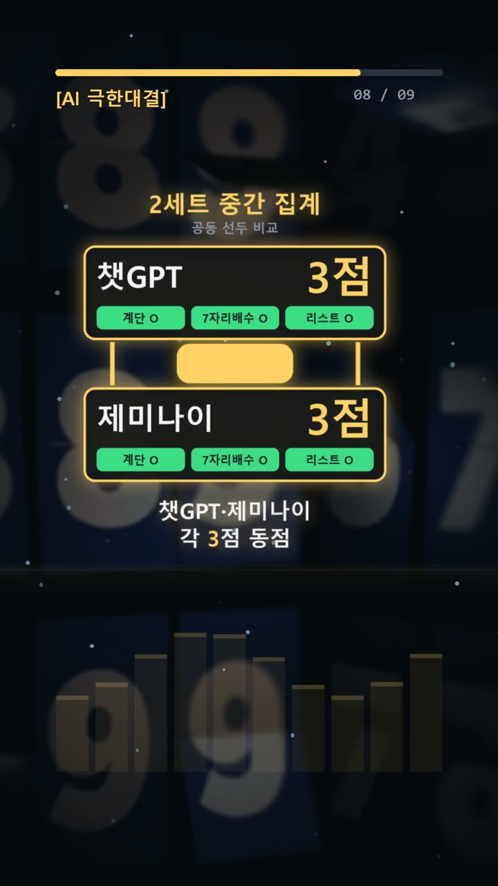

이 포스팅은 쿠팡 파트너스 및 토스쇼핑 쉐어링크 활동의 일환으로, 이에 따른 일정액의 수수료를 제공받습니다.
ai 비교 분석 계단·경우의 수·코드, 채점 기록 점검
서론
AI가 만든 숫자를 보고서나 코드에 옮기기 전에는 무엇을 확인해야 할까. 계산식만 살피기 쉽지만, 그 답이 지금 보고 있는 질문에 대한 답인지부터 확인해야 한다. 질문과 답이 어긋나면 정답표가 있어도 채점 결과를 믿기 어렵다.
2026년 10월 23일 기록의 결론은 GPT·Gemini 3점, Claude 2점이다. 조건은 같은 질문 1회, 재시도 0회였다. 다만 첨부된 질문·정답키와 실제 답변이 서로 맞지 않는다. 따라서 이 점수는 기록에 적힌 결과로 소개하되, 첨부된 세 문제로 확인한 성적으로 단정할 수 없다.
핵심은 Claude가 하나 더 셌다는 주장과 그 근거를 구분하는 데 있다. 답변 원문을 함께 보면 확인할 수 있는 부분과 아직 확인할 수 없는 부분이 갈린다.

실험 설계
첨부된 문제는 세 개다. 첫째는 휴식 시간을 포함한 계단 이동 시간, 둘째는 여러 조건을 만족하는 세 자리 수의 개수, 셋째는 반복 중 원소를 지우는 파이썬 코드의 결과다.
정답키는 차례로 79, 12, [4, 2, 5]다. 이런 기준표를 두는 이유는 AI의 말투나 설명 길이에 흔들리지 않고 같은 기준으로 답을 비교하기 위해서다. 다만 기록에는 정답을 확정한 시점이나 문제를 고른 별도 이유까지 적혀 있지는 않다.
확인 가능한 진행 조건은 세 AI에 같은 질문을 한 번씩 주고, 재시도하지 않았다는 것이다. 모델 표기는 GPT-6.1 Sol High, Gemini 4 Argon, Claude Opus 5.5 중간이다.
여기서 먼저 정리해야 할 문제가 생긴다. 결과 설명에는 ‘2번째 세트’라고 쓰였지만 시도 세트 수는 1로 기록돼 있다. 어느 세트의 질문과 답을 묶어야 하는지 확인할 필요가 있다.

결과
실제 답변란에 저장된 내용은 다음과 같다. 세 번째 칸은 줄바꿈으로 이어진 두 출력을 순서대로 옮겼다.
| 모델 | 첫 번째 답 | 두 번째 답 | 세 번째 답에 이어진 출력 | |---|---|---|---| | GPT | 61223 | 1489 | [4, 5, 6] / [(0, 0), (1, 2), (2, 4), (3, 6)] | | Gemini | 61223 | 1489 | [4, 5, 6] / [(0, 0), (1, 2), (2, 4), (3, 6)] | | Claude | 61223 | 1490 | [4, 5, 6] / [(0, 0), (1, 2), (2, 4), (3, 6)] |
저장된 답에서 모델 간 차이는 두 번째 숫자다. GPT와 Gemini는 1489, Claude는 1490이라고 답했다. 채점표에는 GPT와 Gemini가 세 문제 모두 통과하고, Claude는 두 번째 문제만 실패했다고 적혀 있다.
그러나 첨부된 두 번째 질문의 정답키는 12다. 첫 번째와 세 번째 답도 각각 79, [4, 2, 5]와 다르다. 이 상태에서 첨부 질문과 실제 답을 그대로 대조하면 저장된 통과 판정은 재현되지 않는다.
따라서 ‘기록상 GPT·Gemini 공동 만점’과 ‘현재 자료만으로 채점 연결을 확인하기 어렵다’를 함께 밝혀야 한다. 서로 다른 세트의 자료가 섞였을 가능성은 있지만, 원인을 확정할 근거는 없다. 이번 기록에서 드러난 시행착오는 이 연결 문제다.

왜 이런 결과가 나왔나
첨부된 문제 자체의 함정은 설명할 수 있다. 다만 이 풀이가 저장된 1489와 1490의 차이를 설명하는 것은 아니다.
계단 문제에서는 층수보다 이동 구간을 세어야 한다. 1층에서 4층까지는 세 구간이고, 중간에 쉬는 짝수 층은 2층 하나다. 33초에서 휴식 3초를 빼면 이동은 30초다. 한 구간에 10초가 걸린다.
1층에서 8층까지는 일곱 구간이므로 이동에 70초가 든다. 2층·4층·6층에서 쉬는 시간은 9초다. 목적지인 8층에서는 쉬지 않으므로 합계는 79초다.
세 자리 수 문제는 조건을 빠짐없이 겹쳐 적용해야 한다. 짝수이고, 숫자 합이 8이며, 세 숫자가 모두 달라야 한다. 조건을 만족하는 수는 134, 152, 170, 206, 260, 314, 350, 512, 530, 602, 620, 710으로 12개다. 합만 맞춰 세면 중복 숫자 조건을 놓칠 수 있다.
파이썬 문제에서는 원소를 지우면 뒤의 원소가 앞으로 당겨진다. 반복 위치는 계속 다음으로 이동하므로 일부 원소를 건너뛰게 된다. 이 코드는 2, 4, 2를 차례로 제거한 뒤 [4, 2, 5]를 남긴다.
한편 Claude의 사후 설명은 일곱 자리 수의 배수 조건을 손으로 나눠 세다가 하나를 더 셌을 가능성을 말한다. 이는 첨부된 세 자리 수 문제와 다르다. Claude도 정확히 어느 경우에서 틀렸는지는 검산 전에는 특정할 수 없다고 밝혔다. 이를 확정된 오류 원인으로 바꿔 쓰면 안 된다.

🧰 오늘의 실험실 생존 세트 — 밤새 실험 돌릴 때 쟁여 두는 것들


결론
이번 자료에서 확인되는 차이는 저장된 답의 1489와 1490이다. 기록상 성적은 GPT·Gemini 공동 3점, Claude 2점이지만, 해당 성적과 연결되는 질문 세트를 확인해야 비교가 완성된다.
실무에서는 다음을 점검하자.
- 질문·답변·정답표에 같은 세트 이름을 붙인다.
- 시간 계산은 이동과 휴식을 나눠 적는다.
- 개수 문제는 조건별 제외 항목과 전체 목록을 대조한다.
- 코드 출력은 실행 결과로 확인한다.
- 사후 해명과 직접 확인된 오류 원인을 구분한다.
기록된 조건은 1회 시도, 문제 3개다. 이 작은 표본으로 모델 전체의 계산 능력을 판단하기 어렵고, 현재는 질문과 답의 연결에도 확인이 필요하다.
이 글은 실제 실험 기록을 바탕으로 AI 도구와 함께 정리했다.
혹시 글에서 틀린 부분이나 고쳐야 할 부분이 보이면 유튜브·스레드 댓글로 알려 주시면 정말 감사하겠습니다. 바로 확인해서 고칠게요!
실험 원문과 실제 답
아래 질문을 세 AI에 똑같이 1번씩 보냈어요.
아래 3문제에 번호별로 짧게 답해라.
1. 1층에서 4층까지 계단으로 올라가는 데 33초가 걸렸습니다. 각 층 사이 계단 수와 걷는 속도는 일정하며, 올라가는 도중 짝수 층에 도착할 때마다 3초씩 멈춰 숨을 고릅니다(단, 최종 목적지 층에 도착했을 때는 숨 고르기 없이 즉시 타이머를 멈춤). 같은 규칙으로 1층에서 8층까지 올라가면 총 몇 초가 걸리는지 숫자만 답하세요.
2. 100부터 999까지의 세 자리 자연수 중에서 짝수이면서, 각 자리 숫자의 합이 8이고, 백의 자리·십의 자리·일의 자리 숫자가 모두 서로 다른 수는 총 몇 개인지 숫자만 답하세요.
3. 다음 파이썬 코드의 실행 결과를 리스트 형태 그대로 답하세요.
a = [2, 2, 4, 4, 2, 5]
for n in a:
if n % 2 == 0:
a.remove(n)
print(a)정답(실험 전에 먼저 정함): 79 / 12 / [4, 2, 5]
| AI | 실제 답 |
|---|---|
| GPT | 61223 1489 [4, 5, 6] [(0, 0), (1, 2), (2, 4), (3, 6)] |
| Gemini | 61223 1489 [4, 5, 6] [(0, 0), (1, 2), (2, 4), (3, 6)] |
| Claude | 61223 1490 [4, 5, 6] [(0, 0), (1, 2), (2, 4), (3, 6)] |
🛒 다시 보기: 오늘의 생존 세트
🎙️ AI 음성이 궁금하다면
우리 채널 내레이션은 타입캐스트를 쓰지만, 영어·다국어 AI 음성을 실험해 보고 싶다면 ElevenLabs도 많이 쓰여요.
ElevenLabs 둘러보기 (제휴)🎬 쇼츠로 다시 보기 · 🧵 함께 이야기하기
🧵 스레드 @alligatorxor에서 오늘 실험 이야기 나누기 · ▶ 유튜브 새AI실험노트 다른 쇼츠 보기 · 📒 실험노트 홈